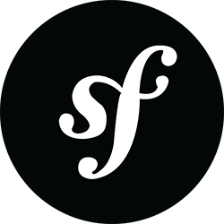
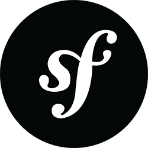
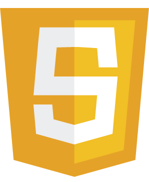
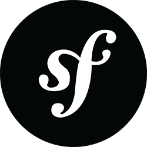

titouan.galvani@ynov.com
69560 ─ St Romain en Gal
Véhicule personnel
07 60 09 38 84
Compétences
Développement web


 



Langues
Anglais Langage professionnel Allemand Notions élémentaires
Centres d'intêrets
Internet (Youtube, Streams, Réseaux Sociaux)
Jeux Vidéo : FPS / Open World
Films/Séries : Comédie, Action, Fantastique / Animation japonaise
Musique : Metal / Rock